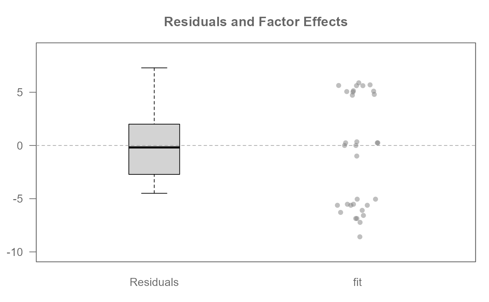
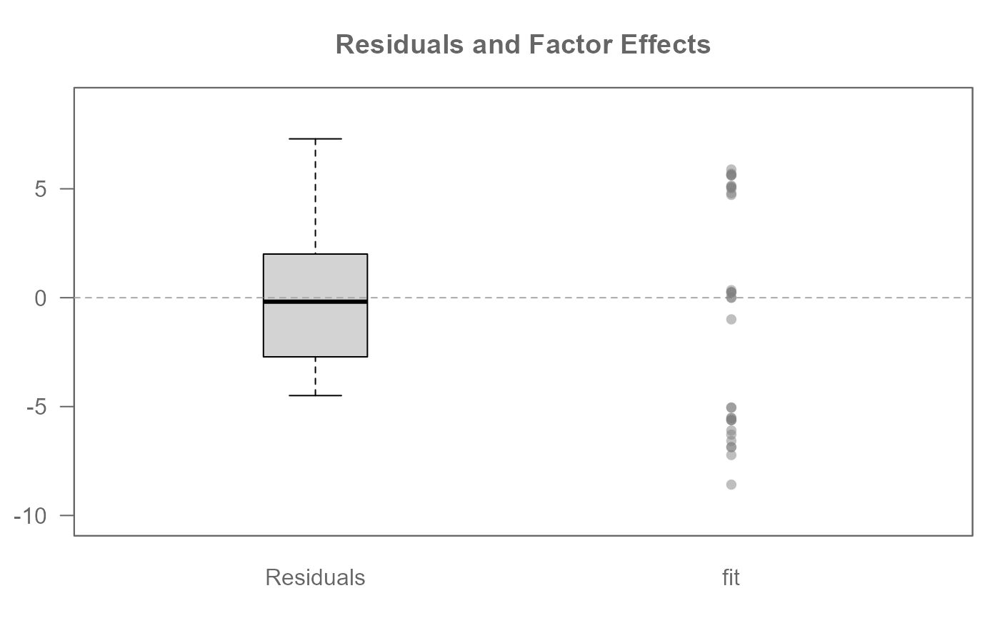
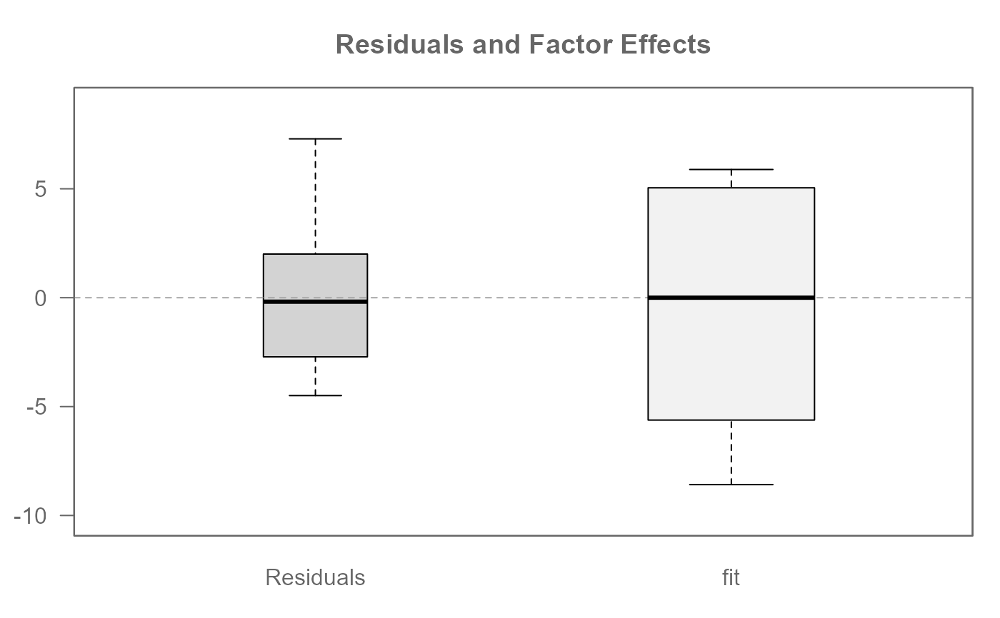
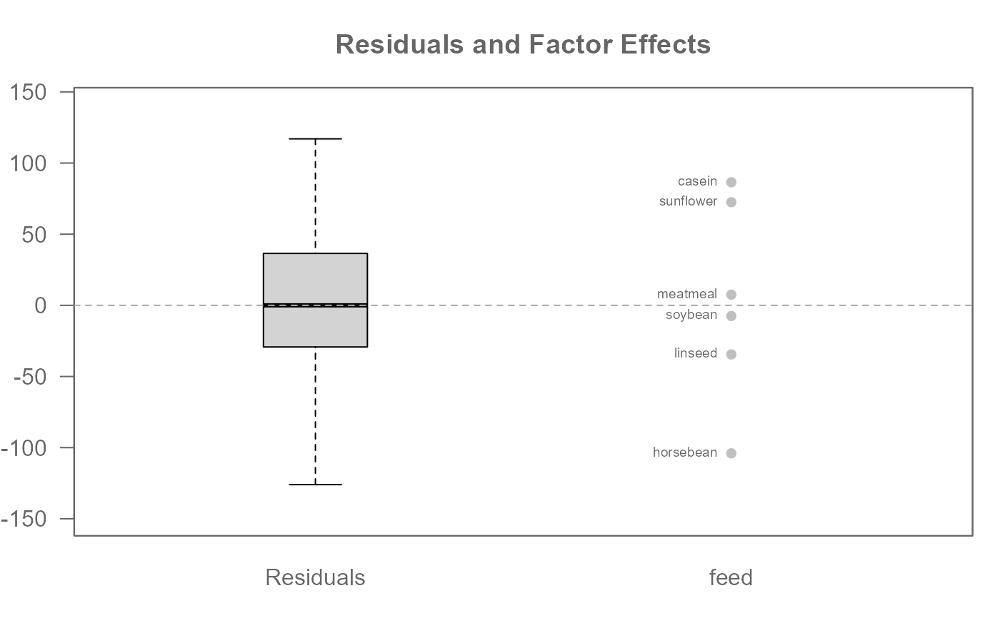
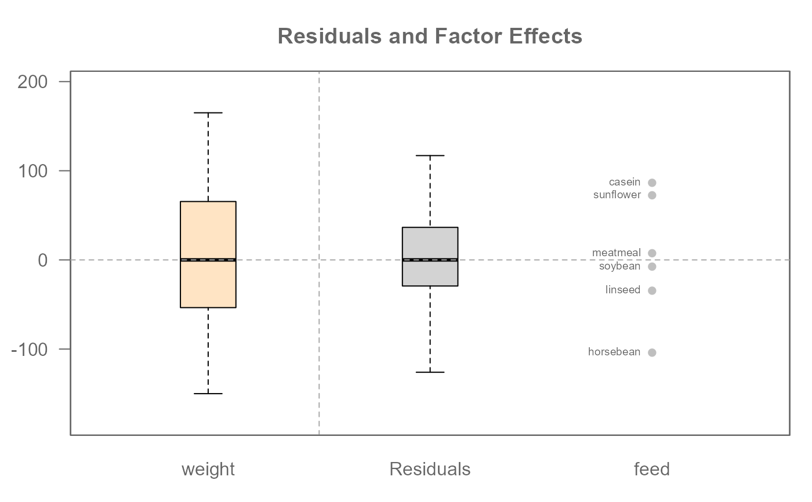

Generate plots that visualize the fit/effect and residuals from eda_* objects.
Usage
eda_vd(
dat,
y = NULL,
x = NULL,
stat = median,
p = 1L,
tukey = FALSE,
base = exp(1),
...
)Arguments
- dat
A model of type
eda_pol,eda_npol,eda_lm, orlm, or a dataframe with a response variable,y, and a categorical variable,x.- y
response (continuous) variable if
datis a dataframe,NULLotherwise.- x
categorical variable if
datis a dataframe,NULLotherwise.- stat
statistical function used to fit
ybyxifdatis a dataframe, ignored otherwise.- p
Power transformation to apply to univariate data. Ignored if
datis not a dataframe.- tukey
Boolean determining if a Tukey transformation should be adopted (TRUE) or if a Box-Cox transformation should be adopted (FALSE). Ignored if
datis not a dataframe.- base
Base used with the
log()function ifp = 0.- ...
Arguments passed on to
.eda_plot_vardecompresponseA character string specifying the name of the response variable column in the
datdata frame.typeA character string specifying the type of plot to generate. Must be either
"boxpnt"or"box".inputA character string.
"reg"= bivariate model input."nway"= univariate model or N-way table input.effA list of effect values. Required when
input = "nway".rotateLogical. If
TRUE, rotates the plot orientation.paddingNumeric. Controls padding for plot limits.
show.respLogical. If
TRUE, includes a boxplot for the response variable.outliersLogical. If
TRUE, outliers are displayed in boxplots.labelLogical. Controls whether labels are displayed.
orderLogical. Controls ordering (likely of factors or effects).
cex.txtNumeric. Controls text size.
limNumeric. Explicit limits for the plot axes.
overlapCharacter. Specifies how to handle overlapping points, must be one of
"stack","overplot", or"jitter".pchPoint symbol type. Only applicable if
type = "boxpnt".p.colPoint border color. Only applicable if
type = "boxpnt".p.fillPoint fill color. Only applicable if
type = "boxpnt".sizePoint size. Only applicable if
type = "boxpnt".alphaTransparency level for points (0 = transparent, 1 = opaque).
greyNumeric. Controls grayscale coloring for plot elements and axes.
Examples
# Compare regression model residuals to fit
M0 <- lm(mpg ~ hp + cyl, mtcars)
eda_vd(M0)
# By default, points sharing a identical value are "stacked"
# To jitter:
eda_vd(M0, overlap = "jitter")

# To overplot:
eda_vd(M0, overlap = "overplot")

# To represent fit using a boxplot
eda_vd(M0, type = "box")

# Decompose variability in response variable for a univariate dataset.
# Add labels to each level.
eda_vd(chickwts, weight, feed, label = TRUE)

# Add response variable (bisque colored boxplot)
eda_vd(chickwts, weight, feed, label = TRUE, show.resp = TRUE)
